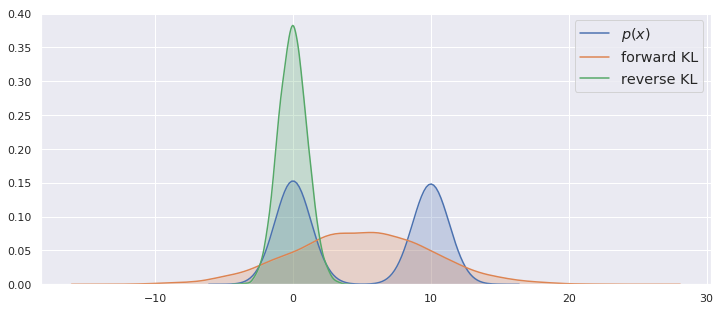

Training generative models as divergence minimization
Interpreting generative models from the perspective of divergence minimization
 Image credit: OpenAI
Image credit: OpenAI
Generative models can be used for data compression, denoising, inpainting, image synthesis, semi-supervised learning, unsupervised representation learning, and other tasks. There are many kinds of generative models, and among which GAN, VAE and autoregressive models are the most popular ones. A great blog on Generative Models written by OpenAI is worth reading at length. In this blog, we mainly discuss generative models from a divergence minimization perspective.
Generative models, as its name explains, it can be used to generate data, the prerequisite is to understand the training dataset, i.e, learn the distribution of the dataset. In order to match model distribution $p _ { \theta } (x)$ to the true data distribution $q(x)$, generative models usually estimate a discrepancy (sometimes we call it distance, divergence) measure $ d(p _ { \theta } (x), q(x))$ and optimize the model parameters $\theta$ to minimize this discrepancy. However we don’t have access to the underlying true data distribution, we only have samples from it (the dataset), so we use this empirical distribution as a surrogate for true data distribution. The wish is that if the model is correct, and for extremely large amounts of data, the model distribution will recover the true data distribution.
There are many concepts of measuring the discrapency between two distributions, in practice, we have only finite data from the dataset and follow some tractable assumptions about the distribution, hence there is often a mismatch between the data distribution and the model distribution, and different discrapency minimization can lead to very different results. Following [1], these discrepancy measures can be casted into three categories: information-theoretic divergences, integral probability metrics, and Hilbert space discrepancy metrics. Now we have a closer look at how to estimate these different measures and what different results we get.
*Note: Divergences are a weak form of distance between two probability distributions with the two properties:
- Non-negative
- Equal to zero if and only if the distributions are equal. we do not require them to be symmetric and follow triangle inequality.*
Information-theoretic divergences
In this part, we mainly consider Information-theoretic divergences, f-divergence family, which contains some often used divergence like Kullback-Leibler (KL) divergence and Jensen-Shannon (JS) divergence.
KL-divergence
KL-divergence is not symmetric, depending on the ordering, we will obtain two different measures. We firstly show their difference from analysis and a toy example and then discuss some applications of both cases.
Minimize Forward KL-divergence
Forward KL-divergence means that the divergence is under the expectation of true distribution.
$$ \begin{align} \theta ^ { * } & = \arg \min _ { \theta } \mathcal { D } _ { \mathrm { KL } } [ q ( x ) || p _ {\theta} ( x ) ] \\ & = \arg \min _ { \theta } \mathbb { E } _ { q ( x ) } \left[ \log q ( x ) - \log p _ {\theta} ( x ) \right] \\ & = \arg \max _ { \theta } \mathbb { E } _ { q ( x ) } \left[ \log p _ {\theta} ( x ) \right] \end{align} $$
From equation (3) we can see that if we want to maximize $\log p _ {\theta} ( x )$ under the expectation of $q(x)$, we need to avoid having near-zero probability where datapoint exists, because $\log p _ {\theta} ( x )$ will go to nagative infinity. So in this way, the model tries to cover the entire support of the true distribution, but the model could assign probability mass to regions where the true distribution has low probability (where datapoint does not exist), the consequence is the model could generate unrealistic samples.
Minimize Reverse KL-divergence
Reverse KL-divergence means that the divergence is under the expectation of the approximate distribution.
$$ \begin{align} \theta ^ { * } & = \arg \min _ { \theta } \mathcal { D } _ { \mathrm { KL } } [ p _ {\theta} ( x ) || q ( x ) ] \\ & = \arg \min _ { \theta } \mathbb { E } _ { p _ {\theta} ( x ) } \left[ \log p _ {\theta} ( x ) - \log q ( x ) \right] \\ & = \arg \max _ { \theta } H , [ p _ {\theta} ( x ) ] + \mathbb { E } _ { p _ {\theta} ( x ) } \left[ \log q ( x ) \right] \end{align} $$
From equation (3) we can see that the first term miximize the entropy of $p _ {\theta} ( x )$, it means that the model distribution should as spread out as possible, the second term means that where the model distribution have probability mass, the true data distribution should not have near-zero probability, hence the support of $p _ {\theta} ( x )$ is basically a subset of the support of $q(x)$. The consequence is that the model might not produce unrealistic samples but could suffer sample diversity because it might not capture all the modes of true data distribution.
Experiments: To illustrate the analysis above, let’s see a toy example. We have some samples drawn randomly from a 1D Gaussian Mixture distribution $p(x)$, but we do not know that, and we fit a Gaussian distribution $p _ { \theta } (x)$ to these samples, the parameters in the model are the mean and variance of the Gaussian distribution. Figure 1. shows the results of minimize KL-divergence from two directions, the result proves our analysis is right: the model minimizing forward KL-divergence cover all the support of true data, but have large probability density in the middle where true data distribution has low distribution density, the samples will look unrealistic in this region. Minimizing reverse KL-divergence only capture one mode of true data distribution but seems not produce unrealistic samples.

As we have discussed in previous post, VAE maximizes a lower bound on data likelihood, and is equivalently minimizing the forward KL-divergence. On the contrary, Expectation Propagation (EP) minimizes the reverse KL-divergence.
JS-divergence
Inn my GAN post, we can see that the generator of GAN actually minimize the JS-divergence between
$f$-divergence
$f$-divergence is a family of a large class of different divergences depend on different $f$ functions, Kullback-Leibler divergence, Hellinger distance, JS-divergence and Kolmogorov total variation distance are some well known instances of $f$-divergence. Given two distributions $P$ and $Q$ that possess, respectively, an absolutely continuous density function $p$ and $q$ with respect to a base measure $dx$ defined on the domain $\mathcal {X}$, we define the $f$-divergence as :
$$ \begin{align} D _ { f } ( P || Q ) = \int _ { \mathcal { X } } q ( x ) f \left( \frac { p ( x ) } { q ( x ) } \right) \mathrm { d } x \end{align} $$
where the function $f$ is a convex function satisfying $f(1) = 0$, by selecting different choices of $f$, some popular divergences will be recovered as special cases of $f$-divergence.
f-GAN [2] proposed variational divergence minimization (VDM) to estimate $D _ { f } ( P || Q )$ given only samples from $P$ and $Q$. Every convex, lower-semicontinuous function $f$ has a convex conjugate function $ f ^ { * } $ defined as:
$$ \begin{align} f ^ { * } ( t ) = \sup _ { u \in \operatorname { dom } _ { f } } [ u t - f ( u ) ] \end{align} $$
The function $ f ^ { * } $ is again convex and lower-semicontinuous and the pair $(f, f ^ { * })$ is dual to another in the sense that $f ^ { ** }= f$. Therefore, we can also represent $f$ as
$$ \begin{align} f ( u ) = \sup _ { t \in \operatorname { dom } _ { f ^ { * } } } [ t u - f ^ { * } ( t ) ] \end{align} $$
$$ \begin{align} D _ { f } ( P || Q ) & = \int _ { \mathcal { X } } q ( x ) \sup _ { t \in \operatorname { dom } _ { f ^ { * } } } [ t \frac { p ( x ) } { q ( x ) } - f ^ { * } ( t ) ] \mathrm { d } x \\ & \geq \sup _ { T \in \mathcal { T } } \left( \int _ { \mathcal { X } } p ( x ) T ( x ) \mathrm { d } x - \int _ { \mathcal { X } } q ( x ) f ^ { * } ( T ( x ) ) \mathrm { d } x \right) \\ & = \sup _ { T \in \mathcal { T } } \left( \mathbb { E } _ { x \sim P } [ T ( x ) ] - \mathbb { E } _ { x \sim Q } \left[ f ^ { * } ( T ( x ) ) \right] \right) \end{align} $$
where $\mathcal { T }$ is an arbitrary class of functions $T : \mathcal { X } \rightarrow \mathbb { R }$, the bound is tight for $T ^ { * } ( x ) = f ^ { \prime } \left( \frac { p ( x ) } { q ( x ) } \right)$.
For f-GAN, which contains a generator $Q _ { \theta }$ and a discriminator $T _ { \omega }$, its objective function is
$$ \begin{align} F ( \theta , \omega ) = \mathbb { E } _ { x \sim P } \left[ T _ { \omega } ( x ) \right] - \mathbb { E } _ { x \sim Q _ { \theta } } \left[ f ^ { * } \left( T _ { \omega } ( x ) \right) \right] \end{align} $$
where we minimize with respect to $\theta$ and maximize with respect to $\omega$. We can see the GAN objective
$$ \begin{align} F ( \theta , \omega ) = \mathbb { E } _ { x \sim P } \left[ \log D _ { \omega } ( x ) \right] + \mathbb { E } _ { x \sim Q _ { \theta } } \left[ \log \left( 1 - D _ { \omega } ( x ) \right) \right] \end{align} $$
as a special instance of f-GAN objective.
Reference
Tao Wu
Research Assistant
My research interests include artificial intelligence, deep learning, deep generative models and adversarial examples.